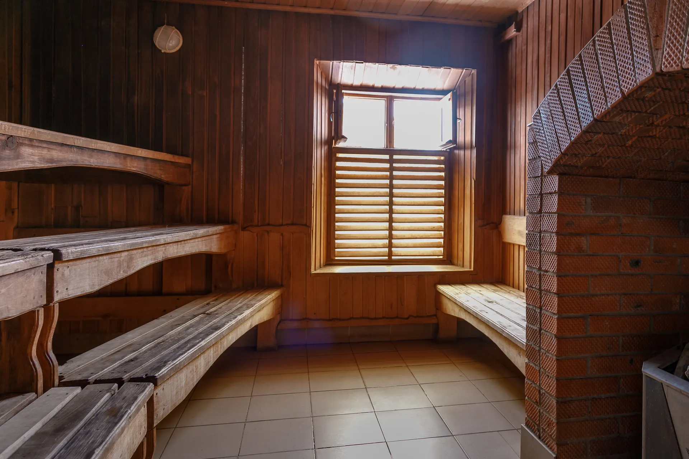
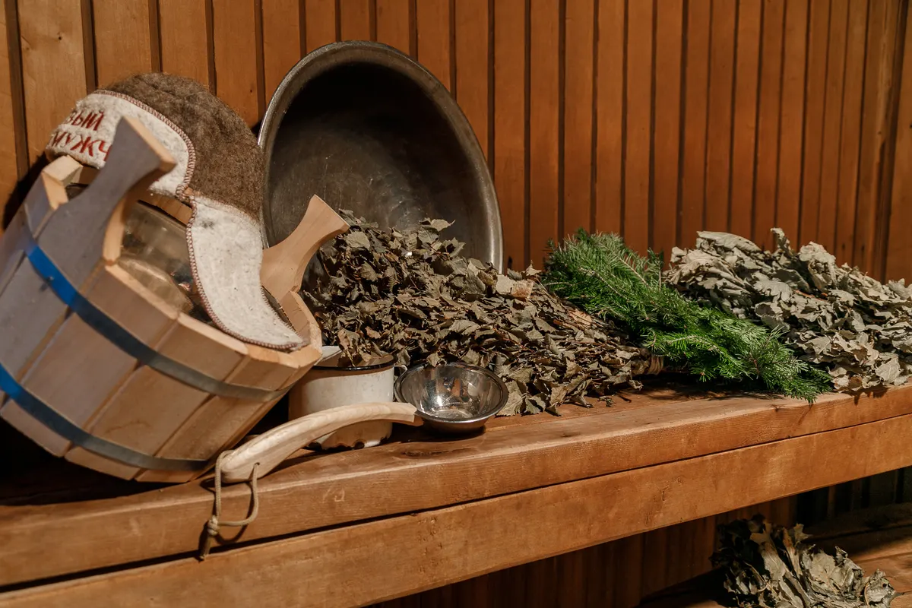
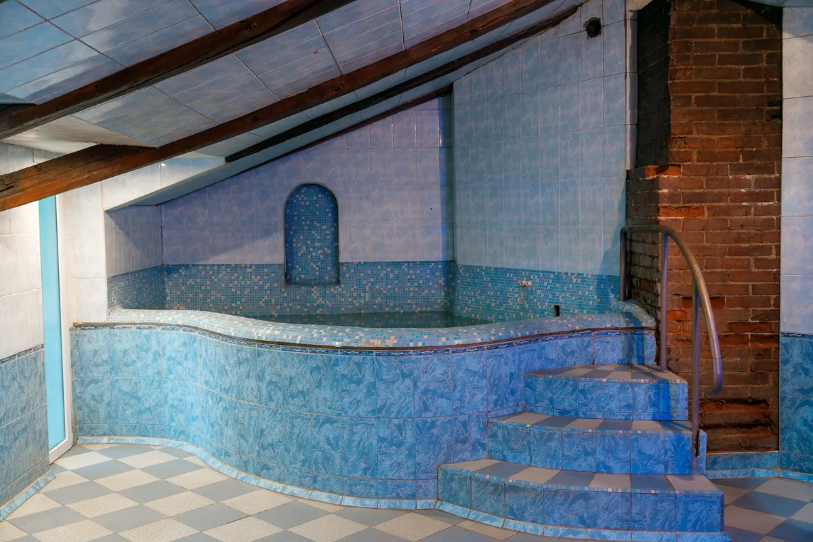
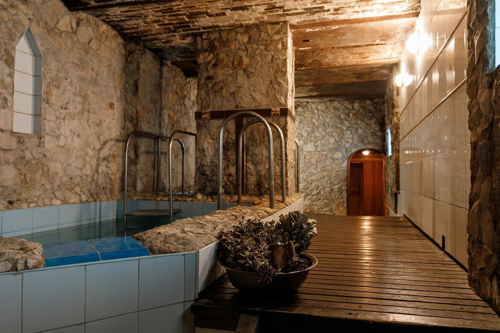

Баня и сауна · Калуга, улица Зелёный Крупец, 28
Баня на дровах и сауна с тёплым бассейном в Калуге - от 500 ₽ в час
Русская баня на дровах, финская сауна, общее отделение и детский бассейн с тёплой водой. Бронь на нужный час - сообщением в WhatsApp или звонком.
- 4,1 по 531 оценке на Яндекс Картах
- Номера от 500 ₽ за час, круглосуточно
- Год основания 1870, указан на логотипе бани

Цены на номера и общее отделение
Цены из прайса бани во ВКонтакте. В каждом номере санузел и душ. Точную сумму на ваш день и время подтвердят при брони.
Русская баня на дровах
- Русская большаяпарная на дровах, тёплый и холодный бассейн, зал для отдыха, 10-13 человек700 ₽ в час
- Русская маленькаяпарная на дровах, тёплый и холодный бассейн, комната отдыха, 5-8 человек700 ₽ в час
Финская сауна
- Финская большаятёплый бассейн, комната отдыха, 7-9 человек1 000 ₽ в час
- Масловатёплый бассейн, комната отдыха, 5-6 человек800 ₽ в час
- Новаятёплый бассейн, 5-8 человек500 ₽ в час
- Финская маленькаятёплый бассейн, комната отдыха, 2-3 человека500 ₽ в час
Общее отделение
- Общее отделениепо графику: ср - мужской день, чт - женский, пт-вс - мужской; пн и вт выходной500 ₽
- Веники, полотенца, простыниналичие и цену назовут при брониуточнить
Цены с картинки-прайса во ВКонтакте, дата обновления неизвестна. Сколько стоит выходной вечер и что входит в час, скажут при брони.
Как пройдёт визит
- 01
Пишете, на какой час
Русская баня, финская сауна или общее отделение, день, время и сколько вас. Администратор ответит, свободно ли.
- 02
Приезжаете к своему часу
Улица Зелёный Крупец, 28. Откройте адрес в навигаторе заранее.
- 03
Парная и бассейн
Парная на дровах или финская сауна, затем тёплый или холодный бассейн, как в вашем номере.
- 04
Отдых с компанией или детьми
В номере санузел, душ и комната отдыха, по прайсу бани. Для малышей отдельный бассейн с тёплой водой.



Что есть в Зелёном Крупце
Баня на дровах и финская сауна
По прайсу бани: два русских номера с парной на дровах и четыре финских, от 500 до 1000 ₽ в час.
Бассейны с тёплой и холодной водой
В трёх банных номерах по два бассейна, тёплый и холодный, так указано на странице бани во ВКонтакте.
Детский бассейн с тёплой водой
Для малышей отдельный бассейн, как написано во ВКонтакте. Гость пишет: «Дети в восторге».
Общее отделение за 500 ₽
По графику: среда, пятница, суббота и воскресенье - мужские дни, четверг - женский. Понедельник и вторник выходные.
Отзывы с Яндекс.Карт
«Почитали отзывы. Немного сомневались. Но в Калуге сложно найти баню с детским бассейном. В итоге отлично провели время и больше в другие места мы не будем ходить. Дети в восторге. Для младшего меленький бассейн с очень теплой водой. Старший в обычном плескался. Все очень понравилось. Персоналу 5+. Попарились от души в настоящей русской бане с вениками(которые можно взять по месту). Переживали что будет скучно, но за 8 часов так и не успели добраться до телефонов и настольных игр.»
Юрий Бойко · 16 декабря 2023
«Самая лучшая баня, города В молодости ходили с друзьями в общественную баню, сейчас с семьёй хожу в русскую маленькую, тёплый бассейн для сына просто супер а для меня после парилки в холодный, он хоть и не очень большой но вода всегда холодная»
Алексей ш. · 2 февраля 2025
«Это АК в мире калужских бань- надёжно, безотказно и качественно. Разные локации- от лайт версии с лёгким паром, до адского пекла преисподней, что босиком в парилку не зайдёшь.»
Siberia Arabic · 18 ноября 2024
Отзывы с карточки на Яндекс.Картах, без правок.
Частые вопросы
Сколько стоит час?
По прайсу бани во ВКонтакте: русская баня 700 ₽ в час, финская сауна от 500 до 1000 ₽ в час в зависимости от номера. Цену на ваше время подтвердят при брони.
Чем отличаются номера?
Вместимостью и форматом. Русская большая - 10-13 человек, русская маленькая - 5-8. Финская большая - 7-9, Маслова - 5-6, Новая - 5-8, финская маленькая - 2-3. Напишите, сколько вас, и подскажем подходящий.
Как работает общее отделение?
Среда, мужской день, 14:00-21:00. Четверг, женский день, 12:00-21:00. Пятница, суббота и воскресенье, мужские дни, 7:00-21:00, перерыв 12:00-15:00. Понедельник и вторник выходные. Стоимость 500 ₽, за вход или за час - уточните при брони.
Можно ли с детьми?
Во ВКонтакте указан детский бассейн с тёплой водой, об этом пишут и гости. Возраст детей, правила и что взять с собой уточните при брони.
Есть ли веники?
Гость пишет, что веники можно взять на месте. Есть ли они сегодня и сколько стоят, подскажут при брони.
Как оплатить?
На карточке Яндекс Карт указана оплата наличными. Остальные способы уточните при брони.
Как найти и как позвонить?
Улица Зелёный Крупец, 28. Бронь по телефонам +7 (902) 987-36-96 и +7 (4842) 57-72-25, на первом можно написать в WhatsApp.
Выберите день и час
- Адрес
- улица Зелёный Крупец, 28, Калуга
- Часы
- номера круглосуточно, общее отделение по графику
- Телефон
- +7 (902) 987-36-96